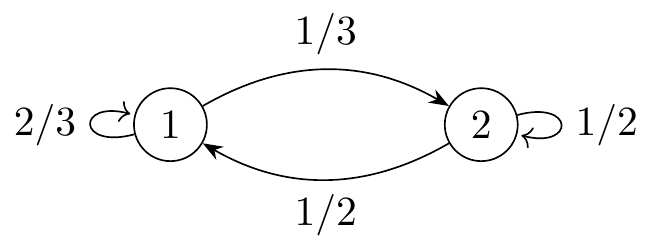

Chapter 14 Markov Chains
14.1 Definition of a Markov Chain
Transitionsdiagram. Et diagram, hvor der fremgår ssh. for et system overgår til et nyt stadie.

Definition. (Stokastisk process i diskret tid) Lad \(\mathcal{X}=(\mathcal{X}_n)_{n\in\mathbb{N}_0}\) være en familie af stokastiske variable og \(\mathcal{S}\) et udfaldsrum . Da er \(\mathcal{X}\) en funktion der opfylder \(\mathcal{X} : \mathbb{N}_0\times \Omega \to \mathcal{S}\) med \((n,w) \mapsto \mathcal{X}_n(w)\).
Bemærkning.
- \(\mathbb{N}_0\) er tidsvariablen senere \([0,\infty)\)
- \(\mathcal{S}\) er højst tællelig
Definition. (Markov kæder i diskret tid) En stokastisk proces i diskret tid \((X_n)_{n\in\mathbb{N}_0}\) har hvis for alle stadier \(i_0,...,i_n\in\mathcal{S}\) opfylder
\[ \mathbb{P}(\mathcal{X}_n=i_n\vert \mathcal{X}_0,...,\mathcal{X}_{n-1}=i_{n-1})=\mathbb{P}(\mathcal{X}_n=i_n \vert \mathcal{X}_{n-1}=i_{n-1}). \]
Da kaldes denne stokastiske proces en Markov kæde. Dvs. For hvert \(n\) er det næste udfald kun afhængig af dette forrige udfald.
Definition. (Initial fordeling) For alle \(i\in\mathcal{S}\) tilhører en initial sandsynlighed for at starte i stadiet \(i\) givet ved
\[ \phi(i):=\mathbb{P}(\mathcal{X}_0=i), \]
hvor familien \(\overline{\phi}=(\phi(i))_{i\in\mathcal{S}}\) er initial fordelingen i.e. \(\phi\) er en vektor over alle mulige startsudfald og deres tilhørende ssh. Hvis \(\mathcal{S}\) er endelig er \(\overline{\phi}\) blot en rækkevektor.
Definition. (Transitionsmatricen) For to stadier \(i,j\in\mathcal{S}\) og et tidspunkt \(n\) er transitionssandsynligheden for at flytte fra \(i\) til \(j\) er
\[ P_{ij}(n)=\mathbb{P}(\mathcal{X}_{n+1}=j \vert \mathcal{X}_n=i). \]
Hvis \(P_{ij}(n)=P_{ij}(m)\) for alle \(n,m\in\mathbb{N}_0\) så kaldes \((\mathcal{X}_n)_{n\in\mathbb{N}_0}\) tidshomogent (definition 1). Den tilhørende matrice \(P=(P_{ij})_{i,j\in\mathcal{S}}\) er kaldet transitionsmatricen.
Bemærkning. En transitionsmatrice karrakteriserer et transitions diagram og omvendt.
\[ P=\begin{pmatrix} 2/3 & 1/3\\ 1/2 & 1/2 \end{pmatrix}. \]
Theorem 2. (Fordeling af \(\mathcal{X}_n\)) For en Markov kæde på \(\mathcal{S}\) med initial fordeling \(\phi\) og transitionsmatrix \(P\) er
\[ (\mathbb{P}(X_n=i))_{i\in\mathcal{S}}=\overline{\phi} P^n \]
14.2 Classification of states
Definition 4. (Communication classes) Lad \(i,j\in\mathcal{S}\) være to stadier. Vi definere \(i\longrightarrow j\) dvs. \(j\) er accesible fra \(i\), hvis der eksisterer et \(n\in\mathbb{N}\) så \(P_{ij}^n>0\). Samt \(i\longleftrightarrow j\) dvs. \(i\) og \(j\) kommunikerer, hvis både \(i\longrightarrow j\) og \(j\longrightarrow i\).
Bemærkning. “\(i\longleftrightarrow j\)” er en ækvivalens relation. Derfor sepererer denne relation \(\mathcal{S}\) ind i to disjunkte ækvivalens klasser, hvad vi definerer som communication classes.
Definition 6. (Lukket kommunikations klasser) En kommunikations klasse \(e\subseteq \mathcal{S}\) kaldes lukket, hvis for alle \(i\in e\) gælder \(\sum_{i\in e}P_{ij}=1\) (den \(i\)’te søjlesummen sum er lig 1 eller ssh. for at forblive i klassen er 1).
Definition. (Ikke reducibel Markov kæde) En Markov kæde kaldes irreducible, hvis der eksisterer kun en kommunikations klasse. Ellers er den reducible.
Definition. (Hitting time) Tiden for at ramme \(i\in \mathcal{S}\) er givet ved \(T_i:=\inf\{n>0 \vert X_n=i\}\). Hvis \(X_0=i\) kaldes denne tid return/recurrence tiden.
Definition 9. (Recurrance/transients) For en Markov kæde \((X_n)_{n\in\mathbb{N}}\) på \(\mathcal{S}\) er et stadie \(i\in\mathcal{S}\) kaldet recurrent hvis \(\mathbb{P}(T_i<\infty \vert X_0=i)=1\). Ellers kaldes \(i\) transient.
Bemærkning. Det kan vises at \(\mathbb{P}(T_i<\infty \vert X_0=i)=1\) er ensbetydende med at \(\mathbb{P}(N_i=+\infty \vert X_0=i)=1\). (se Thm 14 i noterne)
Theorem 11. (Recurrence criterium 1) For en Markov kæde på \(\mathcal{S}\) med transistionsmatrice \(P\), da er følgende ækvivalent. Det holder at \(\sum_{n=1}^\infty (P^n)_{ii}=+\infty\) og \(i\) er recurrent.
Theorem 12. (Recurrence som klasseegenskab) Alle stadier i en kommunikations klasse er enten recurrent eller transient dvs. hvis blot en af stadierne \(i\in e\) er recurrent er alle recurrent og ligeledes med transient.
Theorem 13. (Antal af besøg) Antal af besøg er givet ved den stokastiske variabel \(N_i:=\sum_{n=1}^\infty 1(X_n=i)\). Hvis \(i\) er recurrent er \(\mathbb{P}(N_i=+\infty)=1\), hvis \(i\) er transient er \(N_i\sim Geo(q)\) på \(N_0\) dvs. \(\mathbb{P}(N_i=k)=(1-q)^kq\) for \(k\in\mathbb{N}_0\) og \(q=P(T_i=+\infty\vert X(0)=i)\).
Theorem 14. For en endelig kommunikationsklasse \(C\subseteq S\) gælder: (\(C\) er recurrent) \(\Leftrightarrow\) (\(C\) er lukket.)
Theorem 16. (Recurrence criterium 2) For en irreducibel Markov Kæde på \(S\) gælder (\(i\in S\) er recurrent) \(\Leftrightarrow\) (For ligningssystemmet \(\alpha(j)=\sum_{k\ne i}P_{j,k}\alpha(k)\) gælder \(\alpha(j)=0\) for alle \(j\ne i\) er den eneste endelige løsning).
Generaliseret matrix multiplikation. For \(\underline{\phi}=(\phi_i)_{i\in\mathcal{S}},\underline{\psi}=(\psi_i)_{i\in\mathcal{S}}\) (vektorer) og \(P=(P_{ij})_{i,j\in\mathcal{S}},Q=(Q_{ij})_{i,j\in\mathcal{S}}\) (matricer) kan følgende produkter udregnes ved
- \((\underline{\phi}\cdot \underline{\psi}^T):=\sum_{i\in\mathcal{S}}\phi_i\psi_i\)
- \((\underline{\phi}\cdot P)_j:=\left(\sum_{i\in\mathcal{S}}\phi_i P_{ij}\right)_j\)
- \((P\cdot Q)_{ij}:=\sum_{k,l\in\mathcal{S}}P_{i,k}Q_{l,j}\)
14.3 Limit results and invariant probabilities
Sidenote. For en vektor \(\overline{\phi}=(\phi_i)_{i\in \mathcal{S}}\) kaldes en fordeling, hvis for alle \(i\in\mathcal{S}\) er \(\phi_i\ge0\) og \(\sum_{i\in\mathcal{S}}\phi_i=1\) og et mål hvis kun \(\phi_i\ge 0\).
Definition 18. (Løkker og perioder) For en Markov kæde i diskret tid er en mulig løkke af længde \(n\) er en følge af stadier \(i_0,i_1,i_2,...,i_n\in\mathcal{S}\) med \(i_0=i_n\) hvor
\[ P_{i_0,i_1}\cdots P_{i_{n-1},i_n}>0 \]
Perioden af et stadie \(i\in\mathcal{S}\) er den største fælles divisor af
\[ D_i=\{n\in\mathbb{N}\ \vert\ \exists \text{a possible loop of length $n$ med $i_0=i_n=i$}\}, \]
dvs. \(\text{per}(i)=GCD(D_i)\). Hvis perioden er 1 kaldes stadiet aperiodisk.
Theorem 19. Alle stadier i en kommunikations klasse har samme periode.
Theorem 21. For en irreducibel, recurrent og ikkeperiodisk Markov kæde på \(\mathcal{S}\) gælder for alle \(i\in\mathcal{S}\) at
\[ \lim_{n\to\infty}P(X_n=i)=\frac{1}{E[T_i \vert X_0=i]} \]
Hvis \(E[T_i \vert X_0=i]=\infty\) defineres \(\lim_{n\to\infty}P(X_n=i):=0\).
Bemærkning. 1) Kun hvis Markov kæden er recurrent og dermed at \(P(T_i=\infty \vert X_i=0)=0\) er \(E[T_i \vert X_0=i]=\sum_{n=1}^\infty nP(T_i=n\vert X_0=i)\) eller er \(E[T_i \vert X_0=i]=+\infty\). 2) Hvis \(E[T_i \vert X_0=i]=\infty\) så er grænsen ikke en fordeling.
Definition 22. Et recurrent stadie \(i\in\mathcal{S}\) kaldes positivt recurrent hvis og kun hvis \(E[T_i \vert X_0=i]<\infty\). Ellers kaldes stadiet nul-recurrent.
Definition. (Invariant fordeling og mål) En ikke negativ vektor \(\overline{\pi}=(\pi_j)_{j\in S}\) kaldes et invariant mål, hvis \(\overline{\pi}=\overline{\pi}P\) og en invariant fordeling, hvis \(\vert\overline{\pi}\vert\).
Theorem 23. For en irreducibel og recurrent Markov kæde på \(\mathcal{S}\) findes et invariant mål \(\nu\) der opfylder \(\nu =\nu P\). Specielt gælder for alle fixed \(i\in\mathcal{S}\) holder det at
\[ \nu_j=E\left[\sum_{n=0}^{T_i-1}1(X_n=j \vert X_0=i)\right] \text{for alle } j\in\mathcal{S} \]
er et invariant mål. Hvis og kun hvis Markov kæden er positiv recurrent kan ovenstående nomaliseres til en invariant fordeling.
Bemærkning. 1) \(i\in\mathcal{S}\) er abitrær, 2) \(\nu(i)=1\) og 3) for irreducible MC gælder (Positiv recurrent) \(\Leftrightarrow\) (Eksisterer unik invariant fordeling)
Theorem 24. or en irreducibel, aperiodisk og positiv recurrent Markov kæde gælder \(\lim_{n\to\infty}P(X_n=j)=\pi_j=1/E[T_j\vert X_0=j]\). Hvor \(\overline{\pi}=(\pi_j)_{j\in S}\) er en invariant fordeling.
Theorem 25 og 26. (Grænseresultat for nul-recurrance og tranience) For et nul-recurrent (THM 25) eller transient (THM 26) stadie \(j\in S\) gælder \(\lim_{n\to\infty}P(X_n=j)=0\) for alle valg af initialfordeling \(\overline{\phi}\).
Theorem 27. (Grænseresultat for periodiske stadier) For en irreducibel Markov kæde med periode \(d>1\) findes grænsen \(\lim_{n\to \infty}P(X_n=i)\) ikke. Men gennemsnittet for en periode gør dvs
\[ \nu_j=\lim_{n\to\infty}\frac{P(X_n=i)+P(X_{n+1}=i)+...+P(X_{n+d-1}=i)}{d} \]
\(\nu=(\nu_j)_{j\in S}\) er et invariant mål og en invariant fordeling hvis \(\vert\nu\vert=1\).
14.4 Absorbing probabilities
Theorem 29. (Absorberende sandsynlighed - endelige udfaldsrum) Lad en endelig Markov kæde være givet ved transistionsmatricen \(P\). Antaget at transtionsmatricen kan inddeles efter kummunikations klasser så
\[ P= \left[ \begin{array}{c|c} \tilde{P} & 0 \\ \hline S & Q \end{array} \right], \]
hvor \(\tilde{P}\) er transistionsmatricen indeholdende kun recurrent stadier. Dertil er \(Q\) og \(S\) sub-matricer af \(P\), hvor \(Q\) indeholder de transient stadier og \(S\) beskriver sandsynlighederne for overgangen fra et transient til et recurrent stadie. Matricen 0 repræsenterer sandsynligheden for at gå fra en recurrent til transient stadie, hvad er umuligt.
Definer dertil matricerne \(M=(I-Q)^{-1}\) og \(A=(I-Q)^{-1}S\). Tallet \(M_{i,j}\) repræsenterer \(E[N_j\vert X_0=i]\) for transient stadier \(i,j\). Tallet \(A_{i,j}\) repræsenterer sandsynligheden for at \(j\) er det første recurrent stadie, der besøger hvis \(X_0=i\) for et transient stadie \(i\).
Theorem 31. (Absorberende sandsynlighed - tællelige udfaldsrum) For en Markov kæde på \(S\) lad \(C\subseteq S\) være en recurrent klasse og \(C'\in S\setminus C\) være en transient klasse. Absorberingssandsynligheden \((\alpha_j)_{j\in C'}\) givet ved \(\alpha_j=P(X_n\in C \vert X_0=j)\) løser ligningssystemet
\[ \alpha_i=\sum_{l\in S\setminus C}P_{i,l}\alpha_l+\sum_{l\in C}P_{i,l} \]
Der findes en endelig løsning hvis og kun hvis \(\lim_{n\to\infty}P(X_n\in C'\vert X_o\in C')=0\).
14.5 Markov Chains in Continuous Times
Definition. (Stokastisk process i kontinuer tid) En stokastisk proces i kontinuer tid er en familie \(X=(X_t)_{t\in[0,\infty)}\) af stokastiske variable.
Eksempel 33. (Poisson processen) Lad \((W_i)_{i\in\mathbb{N}}\) være en følge af uafhængige stokastiske variable, hvor \(W_i\sim Exp(\lambda)\) dvs. \(W_i\) har tæthed \(f(x)=\lambda \exp(-\lambda x)\). Betragt \(W_i\) som ventetiden indtil en begivenhed af interesse indtræffer. Lad \(\tau_n:=W_1+...+W_n\) være tiden indtil den \(n\)’te begivenhed indtræffer. Den stokastiske variabel \(N_t=\sum_{n=1}^\infty 1(\tau_n\le t)\) der tæller antal begivenheder indtil tidspunkt \(t\) definerer en stokastisk proces i kontinuer tid dvs. processen \((N_t)_{t\ge 0}\). Vi kalder denne proces Poisson processen.
Definition 34. (Homogen Markov kæde i kontinuer tid) En kontinuer Markov kæde på en højst tællelig mængde \(S\) er en familie af stokastiske variable \((X_t)_{t\ge0}\) på sandsynlighedsrummet \((\Omega, \mathcal{F},P)\) der opfylder \[\begin{align*} &P(X(t_{n+1})=j\vert X(t_n)=i, X(t_{n-1})=i_{n-1},...,X(t_0)=i_0)\\ =\ &P(X(t_{n+1})=j\vert X(t_n)=i)=P_{i,j}(t_{n+1}-t_n) \end{align*}\] for \(j,i,i_{n-1},...,i_0\in S\) og \(t_{n+1}>t_n>...>t_0\ge0\). Fordelingen af Markov kæden er givet ved initialfordelingen \(\overline{\phi}=(P(X_0=i))_{i\in S}\) og transistionssandsynlighederne \(P_{i,j}(t)=P(X(t+s)=j\vert X(s)=i)\) og identiteten \[\begin{align*} &P(X(t_{n+1})=j, X(t_n)=i, X(t_{n-1})=i_{n-1},...,X(t_0)=i_0)\\ =\ &P_{i,j}(t_{n+1}-t_n)\cdot ...\cdot P_{i_0,i_1}(t_1-t_0)\phi(i_0) \end{align*}\]
Definition 35. (Minimal konstruktion) Lad \(\overline{\phi}=(\phi_i)_{i\in S}\) være en sandsynlighedsvektor og lad \(Q=(q_{i,j})_{i,j\in S}\) være en intensitetsmatrice dvs. \(q_{i,j}\) er reelle tal med egenskaberne 1) alle ikke diagonal indgange er ikke negative dvs. \(q_{i,j}\ge 0\) for alle \(i,j\in S\) og \(i\ne j\) og 2) diagonal er negativ lig rækkesummen dvs. \(q_{i,i}=-\sum_{j\ne i}q_{i,j}\).
Givet \(\overline{\phi}\) og \(Q\) kan en tids-homogen Markov kæde konstrueres ved følgende fem trin. Matricen \(Q\) kaldes transistionsintensiteten for den stokastiske proces \((X_t)_{t\ge 0}\).
- Vælg \(\gamma(0)\) ud fra initialfordelingen, så \(P(\gamma(0)=i)=\phi(i)\).
- givet \(\gamma(0)\) sæt \(\tau_1:=W_1\sim Exp(q_{\gamma(0)})\) og definer \(X(t)=\gamma(0),t\in[0,W_1)\)
- givet \(\gamma(0)\) og \(W_1\) vælg \(\gamma(1)\) sådan at \(P(\gamma(1)\vert \gamma (0))=\frac{q_{\gamma(0),i}}{q_{\gamma(0)}},i\ne \gamma(0)\)
- recursivt givet \(\gamma(0),...,\gamma(n),W_1,...,W_n\) vælg \(W_{n+1}\sim Exp(q_{\gamma(n)}\). Lad \(\tau_{n+1}=\tau_n+W_{n+1}\) og definer \(X(t)=\gamma(n),t\in[\tau_n,\tau_{n+1})\)
- vælg \(\gamma(n+1)\) sådan at \(P(\gamma(n+1)\vert \gamma(0),...,\gamma(n),W_1,...,W_n)=\frac{q_{\gamma(n),i}}{q_{\gamma(n)}},i\ne Y(n)\).
Definition 37. (Absorbering) Hvis Markov kæden givet ved minimal konstruktion på tidspunkt \(\tau_n\) hopper til stadie \(\gamma(n)=i\) med \(q_i=0\) så lader vi \(X(t)=\gamma(n)\) for \(t\ge \tau_n\) og vi siger at Markov kæden er absorberet på stadie \(i\).
Definition 38. (Eksplosion) Hvis Markov kæden hopper uendeligt mange gange på et endeligt interval dvs. \(\tau_\infty :=\lim_{n\to\infty}\tau_n<+\infty\) og dermed \(P(\tau_\infty<+\infty)>0\). Lader vi \(X(t)=\Delta\) for \(t\ge \tau_\infty\). Vi kalder tidspunktet \(\tau_\infty\) for eksplosionstidspunktet.
Theorem 39. (Embedded Markov Chain of jumps) For en markov kæde i kontinuert tid med transitions intensiteter (intensitetsmatrice) \(Q = (q_{i,j})_{i,j\in s}\) givet ved den minimale konstruktion fra definition 35, er følgen \((\Gamma(n))_{n \in \mathbb{N}_0}\) af besøgte stadier en markov kæde i diskret tid med transitionsmatricen \(P\) givet ved \[\begin{align*} \left\{\begin{array}{cc} -\frac{q_{i,j}}{q_{i,i}} = \frac{q_{i,j}}{q_i} & i \in S \setminus A, j \notin \{i,\Delta\} \\ 0 & i \in S \setminus A, j \in \{i, \Delta\} \\ 0 & i \in A, j \ne i \\ 1 & i \in A, j = i \end{array}\right. \end{align*}\] Hvor \(A = \{i \in S \vert q_i = 0\}\) er delmængden af absorberende stadier.
Bemærkning: Det er klart, at de enkelte indgange \((P_{i,j}(t))_{i,j \in S}\) (\(t\ge0\)) i transistionsmatricen må være ikke negative. Endvidere er rækkesummerne, for en markov kæde hvor eksplosion ikke er mulig, lig 1. Specielt er transitionssandsynlighederne for et valgt \(t \ge 0\) i overenstemmelse med dem som vi har set i kapitel 2. For skift i tid, kræves næste teorem.
14.6 Properties of transitionsprobabilities
Theorem 42. (Chapman-Kolmogorov ligninger) Transitionssandsynlighederne for en homogen markov kæde i kontinuert tid opfylder Chapman-Kolmogorov ligningerne
\[ \forall s,t \ge 0, \forall i,j \in S : P_{i,j}(t+s) = \sum_{l\in S}P_{i,l}(t) \cdot P_{l,j}(s) \] Hvis state space er endeligt, så kan \(P(t) = (P_{i,j}(t))_{i,j\in S}\) ses som en matrice for hvilket som helst valgt \(T \ge 0\) og så kan Chapman-Kolmogorov ligningerne skrives som matrice ligningen
\[ P(t+s) = P(t)P(s) \]
Theorem 43. (Infinitesimal generatoren af en markov kæde) For en markov kæde i kontinuert tid, kan transitionsintensiteterne udledes fra transitionssandsynlighederne som grænserne \[\begin{align*} \lim_{t\to0+}\frac{P_{i,i}-1}{t} = -q_i \\ \lim_{t\to0+}\frac{P_{i,j}}{t} = q_{i,j}, \hspace{5pt} i \ne j \end{align*}\]
Theorem 44. (Backward differential equations) For en markov kæde i kontinuert tid holder det altid, at
\[ DP_{i,j}(t) = P_{i,j}'(t) = -q_iP_{i,j}(t) + \sum_{k\ne i}q_{i,k}P_{k,j}(t) \]
Theorem 45. (Forward differential and integral equations) For en markov kæde i kontinuert tid, holder det, at
\[ P_{i,j}(t) = \delta_{i,j}\exp(-q_jt)+\int^t_0\sum_{l\ne j}P_{i,l}(u)q_{l,j}\exp(-q_j(t-u))du \]
og at
\[ DP_{i,j}(t) = -P_{i,j}(t)q_j+\sum_{l \ne j}P_{i,l}(t)q_{l,j}. \]
Theorem 47. (Transitionssandssynlighederne for et endeligt state space) For en markov kæde i kontinuert tid med endeligt state space, kan den “backward differential equation” udtrykkes i matrice form som
\[ DP(t) = P'(t) = QP(t) \]
Hvor \(P(t) = (P_{i,j}(t))_{i,j \in S}\) Ved at bruge startbetingelsen \(P(0) = I\), kan transistionssandsynlighederne udtrykkes på formen af eksponentiel matricen
\[ P(t) = \exp(Qt), \hspace{5pt} t \ge 0. \]
14.7 Invariant probabilies and absorption
Definition 49. (Kommunikationsklasser og “irreducibility”) To stadier \(i,j \in S\) siges at kommunikere, hvis der findes \(s,t > 0\) således at
\[ P_{i,j}(s) > 0 \text{ og } P_{j,i}(t) > 0. \]
Denne definition inddeler \(S\) i disjunkte kommunikationsklasser, ligesom vi har set i kapitel 2. En markov kæde i kontinuert tid siges at være “irreducible” hvis der kun findes én kommunikationsklasse.
Bemærkning: Man kan anvende, at to stadier \(i,j \in S\), hvor \(i \ne j\) kommunikerer, hvis og kun hvis, der eksisterer en følge af stadier \(i_1, i_2, ..., i_n \in S\) (som indeholder stadie \(j\)) således, at \(q_{i,i_1}\cdot q_{i_1,i_2}\cdot...\cdot q_{i_{n-1},i_n}\cdot q_{i_n,i} > 0\). (Er der en mulig sti frem og tilbage mellem \(i\) og \(j\)?)
Definition 50. (Recurrence og transience)
- En irreducible markov kæde i kontinuert tid er recurrent, hvis og kun hvis, den embedded markov kæde (se teorem. 39) er recurrent. Den er transient, hvis og kun hvis, den embedded markov kæde er transient.
- Stadiet \(i\) er transient, hvis og kun hvis, den totale tid tilbragt i stadiet \(i\) \[ V_i = \int^\infty_01_{X(t) = i}dt \] er endelig med sandsynlighed 1, altså \(P(V_i < +\infty \vert X(0) = i) = 1\). Tilsvarende er stadiet \(i\) recurrent hvis \(P(V_i = +\infty \vert X(0) = i) = 1\).
Bemærkning: Denne definition kan anvendes på de enkelte kommunikationsklasser. Specielt er et absorberende stadie altid recurrent.
Definition 51. (Invariant fordeling) En sandsynlighedsvektor \(\overline{\pi} = (\pi(i))_{i \in S}\) er en invariant (eller stationær) fordeling for en markov kæde i kontinuert tid, hvis for alle \(t \ge 0\) og \(j \in S\)
\[ \pi(j) = \sum_{i \in S}\pi(i)P_{i,j}(t). \]
Theorem 52. (Entydigheden af den invariante fordeling) Overvej en markov kæde i kontinuert tid. En invariant fordeling er unik, hvis den eksisterer. Hvis der for et \(t_0 > 0\) findes en sandsynlighed \(\overline{\pi}=(\pi(i))_{i\in S}\) sådan, at
\[ \forall j \in S : \pi(j) = \sum_{i \in S}\pi(i)P_{i,j}(t_0) \]
kan vi konkludere, at
- \(\forall i \in S : \pi(i) > 0\)
- \(P(t_0)\) er en overgangssandsynlighed, dvs. \[ \forall i \in S : \sum_{j \in S}\pi(i)P_{i,j}(t_0) = 1 \]
- \(\overline{\pi}\) er en invariant fordeling for markov kæden, dvs. \[ \forall t \ge 0, \forall j \in S : \pi(j) = \sum_{j \in S}P_{i,j}(t_0) = 1 \]
Bemærkning: Det følger af (3), at hvis vi kan finde en invariant fordeling for et bestemt \(t_0 > 0\), så gælder denne for alle \(t > 0\). Det følger også, som resultat af dette, at alle rækkesummerne \(\sum_{j \in S}P_{i,j}(h) = 1\) for alle \(h \ge 0\), hvor en invariant fordeling kan findes.
Theorem 53. (Grænseresultater for overganssandsynligheder) For en irreducible markov kæde i kontinuert tid, med en invariant fordeling \(\overline{\pi}\), gælder det for alle \(i,j \in S\), at
\[ \lim_{t \to \infty}P_{i,j}(t) = \pi(j). \] Endvidere gælder det for enhver initial fordeling \(\overline{\phi}\), at
\[ \lim_{t \to \infty}P(X(t) = j) = \pi(j). \]
Hvis der ikke findes en invariant fordeling, så gælder der
\[ \lim_{t \to \infty}P_{i,j}(t) = 0. \]
Theorem 55. (Nødvendig betingelse for invariant fordeling) For en markov kæde i kontinuert tid, er det nødvendigt, at den invariante fordeling \(\overline{\pi}\) passer med ligningsystemet
\[ \forall j \in s : \sum_{i \in S}\pi(i)q_{i,j} = 0 \]
Eller tilsvarende
\[ \forall j \in S : \sum_{i\ne j}\pi(i)q_{i,j} = \pi(j)(-q_{j,j}) = \pi(j)q_j \]
Tænker man på \(\overline{\pi}\) som en række vektor og \(Q\) som en matrice, har ligningssystemet en mere kompakt formulering
\[ \overline{\pi}Q = 0. \]
Theorem 56. (Tilstrækkelig betingelse for en invariant fordeling) Hvis \(\overline{\pi}\) overholder betingelsen i teorem 55 og endvidere overholder
\[ \sum_{j \in S}\pi(j)q_j < \infty \]
Så er \(\overline{\pi}\) en unik invariant fordeling for en irreducible markov kæde.
Theorem 58. En irreducible markov kæde i kontinuert tid har en invariant fordeling, hvis og kun hvis, den indlejrede (embedded) markov kæde er recurrent og der ekstisterer en sandsynlighedsvektor \(\overline{\pi}\) således, at teorem 55 er overholdt. (\(\overline{\pi}Q = 0\))
Theorem 60. (Tids-invariant vs. hændelses-invariant fordeling) Antag, at der for en irreducible markov kæde i kontinuert tid findes en invariant fordeling \(\overline{\nu}\). Hvis vi også har bekræftet eksistensen af en invariant fordeling for den indlejrede markov kæde, så gælder følgende forhold mellem dem.
\[ \pi(i) = \frac{\nu(i)q_i}{\sum_{j \in S}\nu(j)q_j}, \hspace{5pt} i \in S. \]
Theorem 61. (Eksistens af invariant fordeling og positive recurrence) For en irreducible og recurrent markov kæde i kontinuert tid definerer vi “escape time” fra stadiet \(i\) som
\[ W_i=\inf\{t > 0 \vert X(t) \ne i\} \]
Og “return time” til stadiet \(i\) som
\[ R_i = \inf\{t > W_i \vert X(t) = i\} \]
Og der gælder, at
\[ \pi(i) = \frac{E[W_i \vert X(0) = i]}{E[R_i \vert X(0) = i]} = \frac{1}{q_iE[R_i \vert X(0) = i]} \]
Vi siger så, at en kommunikationsklasse er “positive recurrent” hvis
\[ E[R_i \vert X(0) = i] < +\infty \]
Bemærkning: Positive recurrence er en klasseegenskab.
Theorem 62. (Tid tilbragt i stadiet j før absorbering) For en markov kæde i kontinuert tid findes det gennemsnitlige antal af besøg til stadiet \(j\) før det absorberende stadie \(i\) rammes, ved at betragte overgangssandsynlighederne af den indlejrede markov kæde. For et endeligt state space, kan man bruge teorem 29, mens man kan bruge teorem 31 for tælleligt uendelige state spaces.
Hvis \(N_j\) er middelværdien af antal besøg til stadiet \(j\) før absorbering i stadiet \(i\), så er middelværdien af tid tilbragt i stadiet j lig \(\frac{N_j}{q_j}\).
Side note: Eksempel 63 har været meget brugbar til at forstå kapitel 3.3.
14.8 Birth-death processes
Definition. (Birth-and-death process) En birth-and-death proces er en markov kæde på \(S = \mathbb{N}_0\) som kun tillader hop (op eller ned) af størrelset ét. Dvs, at for overgangsintesiterne, gælder \(q_{i,j} = 0, i,j \in \mathbb{N}_0, |i-j| > 1\), mens de eneste ikke-nul indgange (udover diagonalen) er lig \[\begin{align*} q_{i,i+1} = \beta_i, i \in \mathbb{N}_0 \rightarrow \text{ birth intensitet} \\ q_{i,i+1} = \delta_i, i \in \mathbb{N} \rightarrow \text{ death intensitet} \end{align*}\] Adfærden af sådan en proces er meget simpelt at beskrive. Hvis man befinder sig i stadiet \(i\), så er ventetiden til det næste hop eksponentiel fordelt med parametren \(\beta_i+\delta_i\) og med gennemsnitstiden \(\frac{1}{\beta_i+\delta_i}\). Når kæden hopper, kan den hoppe op med sandsynlighed \(\frac{\beta_i}{\beta_i + \delta_i}\) eller hoppe ned med sandsynlighed \(\frac{\delta_i}{\beta_i+\delta_i}\).
Side note: Meget af kapitel 3.4 er eksempler på birth-and-death processer.
Theorem 66. (Birth-and-death processer: recurrence) En birth-and-death proces er recurrent, hvis og kun hvis,
\[ \sum_{i=1}^\infty\frac{\delta_i\cdot...\cdot \delta_1}{\beta_i\cdot...\cdot \beta_1} = \infty. \]
Ækvivalent er en birth-and-death proces transient, hvis og kun hvis,
\[ \sum_{i=1}^\infty\frac{\delta_i\cdot...\cdot \delta_1}{\beta_i\cdot...\cdot \beta_1} < \infty. \]
Theorem 67. (Birth-and-death processer: positive recurrence) En birth-and-death proces er positive recurrent, hvis og kun hvis,
\[ \sum_{i=1}^\infty\frac{\beta_{i-1}\cdot...\cdot \beta_0}{\delta_i\cdot...\cdot \delta_1} < \infty \hspace{10pt} \text{og} \hspace{10pt} \sum_{i=1}^\infty\frac{\delta_i\cdot...\cdot \delta_1}{\beta_i\cdot...\cdot \beta_1} = \infty \]
Theorem 68. (Eksplosion for en birth-and-death proces) For en birth-and-death proces med intensiteterne
\[ q_{i,i+1} = \beta_i, \hspace{10pt} q_{i+1,i}=\delta_{i+1}, \hspace{10pt} q_{i+1,i+1} = -(\delta_{i+1}+\beta_{i+1}) \]
og med \(q_{i,j} = 0\) ellers, \(i,j \in \mathbb{N}_0\), så er eksplosion muligt, hvis og kun hvis,
\[ \sum_{i=1}^\infty\left(\frac{1}{\beta_i}+\frac{\delta_i}{\beta_i\beta_{i-1}}+...+\frac{\delta_i\cdot...\cdot \delta_1}{\beta_i\cdot...\cdot \beta_0}\right)<\infty \]